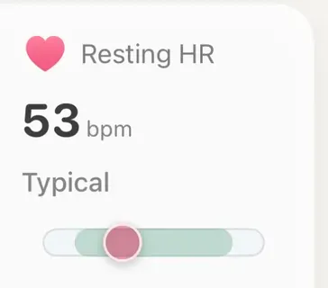

Alapok · Szív

A nyugalmi pulzus normál értéke egy széles sáv, nem egyetlen szám. A tankönyvi tartomány felnőtteknél percenként 60–100 szívverés, egészséges embereknél mégis bárhol lehet 40 és 100 körül, az edzett futók pedig általában a sáv alján járnak. A legtöbbet a saját számod mondja el a saját szokásodhoz mérve, napokon át, nem egyetlen reggelen.
Az Apple HealthKit-dokumentációja szerint a nyugalmi pulzus annak becslése, mennyi a legalacsonyabb pulzusod a pihenés időszakaiban. Nem egyszerűen az a mérés, amit leüléskor kapsz, hiszen az edzés után még magas lehet. A rendszer a nap folyamán, mozdulatlan helyzetben vett mérésekből becsüli, és a korábbi értékeket felülírhatja, ahogy a becslés pontosodik. Ezért változhat még estére a mai szám.
A nyugalmi pulzus nem azonos az alvás közbeni pulzussal, ami általában még alacsonyabb. Erről külön jegyzet szól: mi az alvási pulzus (angolul).
Az American Heart Association felnőtteknél a 60–100/perc tartományt tartja normálisnak. Ez inkább megállapodás, mint mért norma. Spodick és munkatársai (1992) szerint egészséges felnőttekre az 50–90/perc jobban illik, és már ez a különbség is mutatja, mennyire elmosódottak a határok.
Az okosórás adatok még élesebben mutatják ezt. Quer és munkatársai (2020) 92 457 Fitbit-viselő felnőtt közel 33 millió napnyi nyugalmi pulzusát elemezték. Az átlag 65/perc volt, a személyes átlagok viszont nagyjából 40 és 109 között szóródtak. Egy egészséges ember normálisa akár 70 ütéssel is eltérhet a másikétól, és az életkor, a nem, a testtömeg és az alvás együtt is csak kis részét magyarázta ennek a szórásnak. A nők minden korosztályban néhány ütéssel magasabb értéket mutattak, mint a férfiak.
Az 52 vagy a 78 tehát önmagában se nem jó, se nem rossz.
Nincs célszám, de az irány jól dokumentált. Egy 191 edzésvizsgálatot összegző áttekintés (Reimers és munkatársai, 2018) szerint az edzés csökkenti a nyugalmi pulzust, az állóképességi edzés pedig nőknél és férfiaknál is egyértelmű csökkenést hozott. Az edzettebb szív egy-egy ütéssel több vért pumpál, így nyugalomban lassabban is elég. Egereken végzett kísérletek (D'Souza és munkatársai, 2014) arra utalnak, hogy a lassulás egy része a szív saját ingerképző rendszerének változásából is ered, nem csak a nyugodtabb idegrendszerből.
Az alacsony nyugalmi pulzus nem hajszolandó eredmény.
Ezért van az edzett futóknál gyakran 50 körüli vagy az alatti érték, és ezért nem szokatlan a 40-es tartomány egészséges, edzett embereknél, ami önmagában nem ad okot aggodalomra. Az alacsony szám nem hajszolandó eredmény. A hasznos jel az, ha a saját értéked egy edzésidőszak alatt néhány ütéssel lejjebb csúszik.
Ugyanez a vizsgálat azt is kimutatta, hogy egy-egy ember nyugalmi pulzusa sokkal stabilabb, mint az emberek közötti különbség. Napról napra átlagosan kb. 3 ütéssel mozdult, és a legtöbb embernél a heti ingadozás 10 alatt maradt. Volt egy kis, kb. 2 ütésnyi évszakos ingadozás is, a csúccsal január elején (Quer és munkatársai, 2020).
Széles az emberek között, szűk egy emberen belül
Ezért a saját szokásod a mérvadó (bővebben: miért magadhoz mérjen az órád, angolul). Ha több napon át 5 ütéssel magasabb, az többet mond bármilyen táblázatnál. A nyugalmi pulzus ugyanakkor elég durva edzésjelző: Buchheit (2014) szerint a fáradtság követésére zajosabb, mint a HRV, és régóta edző sportolóknál a nagy fáradtság akár alacsonyabb pulzussal is járhat. Olvasd együtt az Apple Watch HRV-értékeddel és azzal, ahogy érzed magad.
Ha felment a számod, az oka többnyire friss és hétköznapi:
Hogy mit jelent egyetlen magas reggel, és mit több egymás után, arról a miért magasabb a nyugalmi pulzusom? jegyzet szól (angolul).
Nyugalomban az optikai érzékelő elég jól teljesít. Mellkaspánthoz mérve az Apple Watch nyugalmi pulzusa átlagosan kb. 3,7 ütéssel tért el, összességében szinte torzítás nélkül (O'Grady és munkatársai, 2024). A csuklón mozgás közben a legnagyobb a hiba: több eszköznél aktivitás alatt kb. 30%-kal nagyobb volt, mint nyugalomban (Bent és munkatársai, 2020). Az 1–2 ütésnyi változást vedd zajnak, és a tartós elmozdulásokat figyeld.

Nyugalmi pulzus az AerábanA kártya az Apple Health nyugalmi pulzusát a saját elmúlt két hetedhez méri, és azt írja: Tipikus, A szokásos fölött vagy Feltűnően magas (illetve ugyanezt lefelé). Hét napnál kevesebb mérésnél azt írja: Alapérték készül.
Az Aera, iPhone-ra és Apple Watch-ra
Az Aera beolvassa az Apple Watch által az Apple Health-be mentett nyugalmi pulzust, és az elmúlt két hét szokásos értékeihez méri. A főképernyő Nyugalmi pulzus kártyája ezután azt írja: Tipikus, A szokásos fölött vagy Feltűnően magas (illetve ugyanezt lefelé), mellette egy hétnapos mini grafikonnal. Amíg nincs legalább hét napnyi mérésed, azt írja ki, hogy Alapérték készül, és nem találgat.
Az Alvás képernyő ugyanezt teszi az alvás közbeni pulzusoddal az utolsó 28 éjszakádhoz mérve, és két hétnyi éjszaka után megmondja, hogy az előző éjszaka a szokásos fölött, nagyjából a szokásos szinten vagy alatta volt. Az Aera soha nem minősíti a nyugalmi pulzusodat népességi táblázat alapján. A kártyáról a Field Guide egy része nyílik, amely elmagyarázza, mi mozgatja a nyugalmi pulzust, és mikor a legtisztább a mérés. Nincs fiók, az egészségadatokat az iPhone-od számolja ki. A nyugalmi pulzusod a szokásodhoz mérve ingyenes, az elmúlt 30 nappal együtt. Az egész alkalmazás magyarul van.
Az Aera nem orvostechnikai eszköz.
Felnőtteknél a szokásosan idézett tartomány percenként 60–100 szívverés, az egészséges emberek azonban ennél jóval szélesebben szóródnak. 92 457 okosóra-viselő adataiban a személyes átlagok nagyjából 40 és 109 között voltak, 65-ös átlaggal. Normális az a nyugalmi pulzus, ami stabilan a saját szokásos tartományodon belül marad.
Nincs célszám. Az állóképességi edzés hetek és hónapok alatt csökkenti a nyugalmi pulzust, ezért az edzett futóknál gyakori az 50 körüli vagy az alatti érték, és a 40-es tartomány sem szokatlan, panaszok nélkül nem ad okot aggodalomra. A hasznos jel az, ha a saját számod egy edzésidőszak alatt lejjebb csúszik.
Többnyire valami friss oka van: kezdődő betegség, alkohol, kemény edzésidőszak, hőség, rövid éjszaka, kevés folyadék vagy egy stresszes időszak. Egyetlen magas nap főleg zaj. Ha több napon át a szokásod fölött marad, különösen ha rosszul is érzed magad, arra érdemes figyelni.
Ha a nyugalmi pulzusod tartósan 100 fölött van, vagy 50 alatt van, és szédülés, ájulás, szokatlan fáradtság, mellkasi fájdalom vagy légszomj társul hozzá, beszélj orvossal. Akkor is, ha jóval a szokásod fölé megy, és kézenfekvő ok nélkül ott marad. Az órán látható érték nem diagnózis.
Kapcsolódó jegyzetek (angolul): miért magasabb a nyugalmi pulzusom? · mi az alvási pulzus · miért magadhoz mérjen az órád · mit nem tud mérni egy okosóra
Kapcsolódó útmutatók: Apple Watch HRV: mennyi a normális? · Fussak ma, ha rosszul aludtam? · Mit jelent a biológiai életkor, amit az órád mutat? · Vérnyomásnapló, amit az orvosod is használni tud · Mit mutat az órád egy alkohol nélküli hónapról?
 Vagy olvasd be az iPhone-oddal
Vagy olvasd be az iPhone-oddalIngyen letölthető. Regisztráció nélkül. Azzal az órával is megy, amit most hordasz.